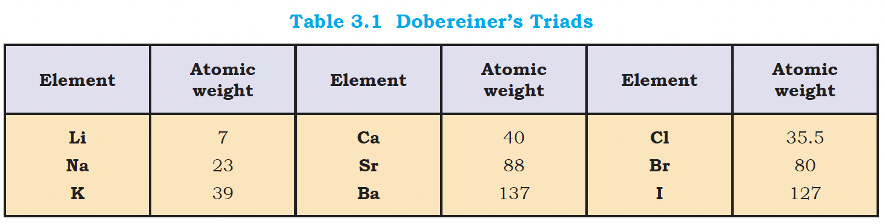
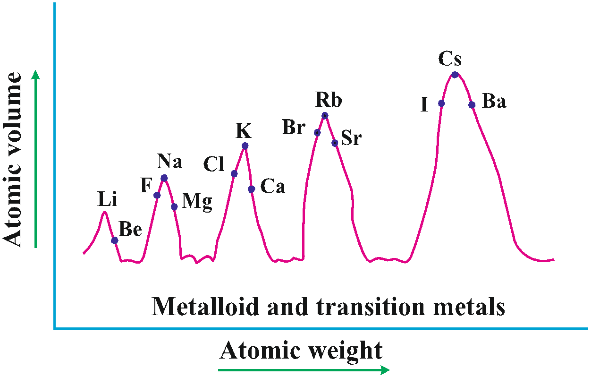

PERIODIC CLASSIFICATION OF ELEMENTS : HISTORICAL DEVELOPMENT
YOUTUBE PLAYLIST LINK
ALL TOPICS IN THE PLAYLIST :
- Historical Development
- Modern Periodic Table
- How to Find Group, Period and Block of any Element || spdf Trick
- Atomic Radius, Ionic Radius & Its Variation
- Ionization Energy || Ionization Potential
- Electron Affinity || Electron Gain Enthalpy
- Electronegativity
HISTORICAL DEVELOPMENT
YOUTUBE LECTURE LINK
TOPICS IN THIS LECTURE :
HISTORY (BEFORE MENDELEEV)
-
The German chemist, Johann Dobereiner in 1829 he noted a similarity
among the physical and chemical properties of several groups of three
elements (Triads). In each case, he noticed that the middle element of
each of the Triads had an atomic weight about half way between the
atomic weights of the other two.
 - Also the properties of the middle element were in between those of the other two members.
- The model failed as all the known elements could not be fixed in Triads. Also, in the same group too, law was not always obeyed.
-
John Alexander Newlands in 1865 profounded the Law of Octaves. He
arranged the elements in increasing order of their atomic weights and
noted that every eighth element had properties similar to the first
element.

- Newlands’s Law of Octaves seemed to be true only for elements up to calcium. Also, with discovery of noble gases, "octave" was no longer valid. Also, it began to fail with the discovery of heavier elements.
- The Periodic Law, as we know it today owes its development to the Russian chemist, Dmitri Mendeleev (1834-1907) and the German chemist, Lothar Meyer (1830-1895).
- Lothar Meyer used a graph, while Mendeleev used a periodic table.
-
Lothar Meyer plotted atomic volume (y-axis) vs atomic weight (x-axis).
Elements at the similar position (example at peaks) on the curve had
similar physical and chemical properties.
 - Mendeleev is also known as the "father of the periodic table of the chemical elements"
- Mendeleev's Periodic law: The properties of the elements are a periodic function of their atomic weights
- Mendeleev's famous Periodic Table was published in 1905
- He wrote a book called "Principles of Chemistry"
- The 101st elements is named after him -> "Mendelevium"
- At the time. he proposed periodic table of elements, the structure of atom was unknown. Even noble gases were not known.
-
Merits of Mendeleev's periodic table:
- All 63 elements were arranged
- He proposed that "Periodic property is proportional to Atomic Weight"
- He left gaps for undiscovered elements.
- He even predicted properties of undiscovered elements.
- He left the gap under aluminium and a gap under silicon, and called these elements "Eka-Aluminium" and "Eka-Silicon". Mendeleev predicted not only the existence of gallium and germanium, but also described some of their general physical properties. These elements were discovered later.
-
Demerits of Mendeleev's periodic table:
- He began grouping dissimilar elements -> Na,K,Rb were placed with Ca and Ag
- Separated similar elements like Pt and Au
- He clubbed Isotopes whereas according to his rule, they have increasing atomic weights, and so should have been separate.